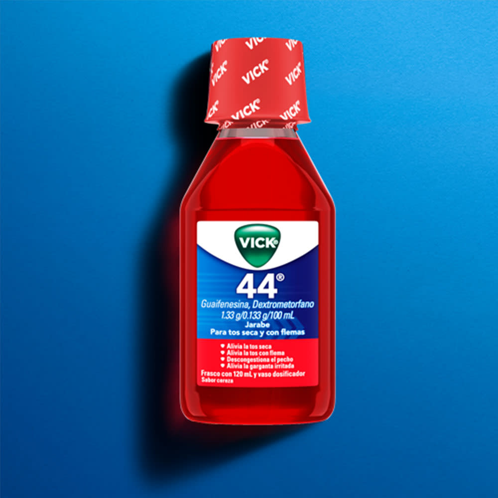
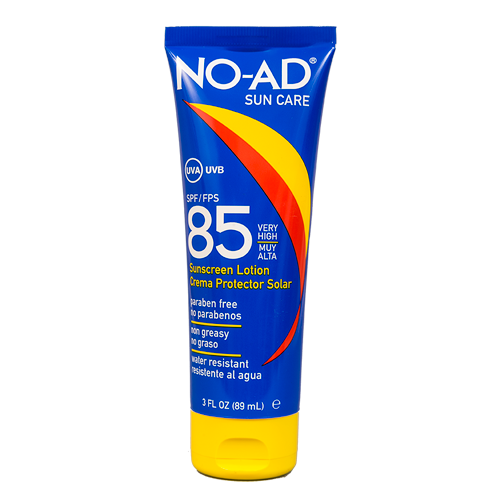
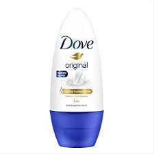
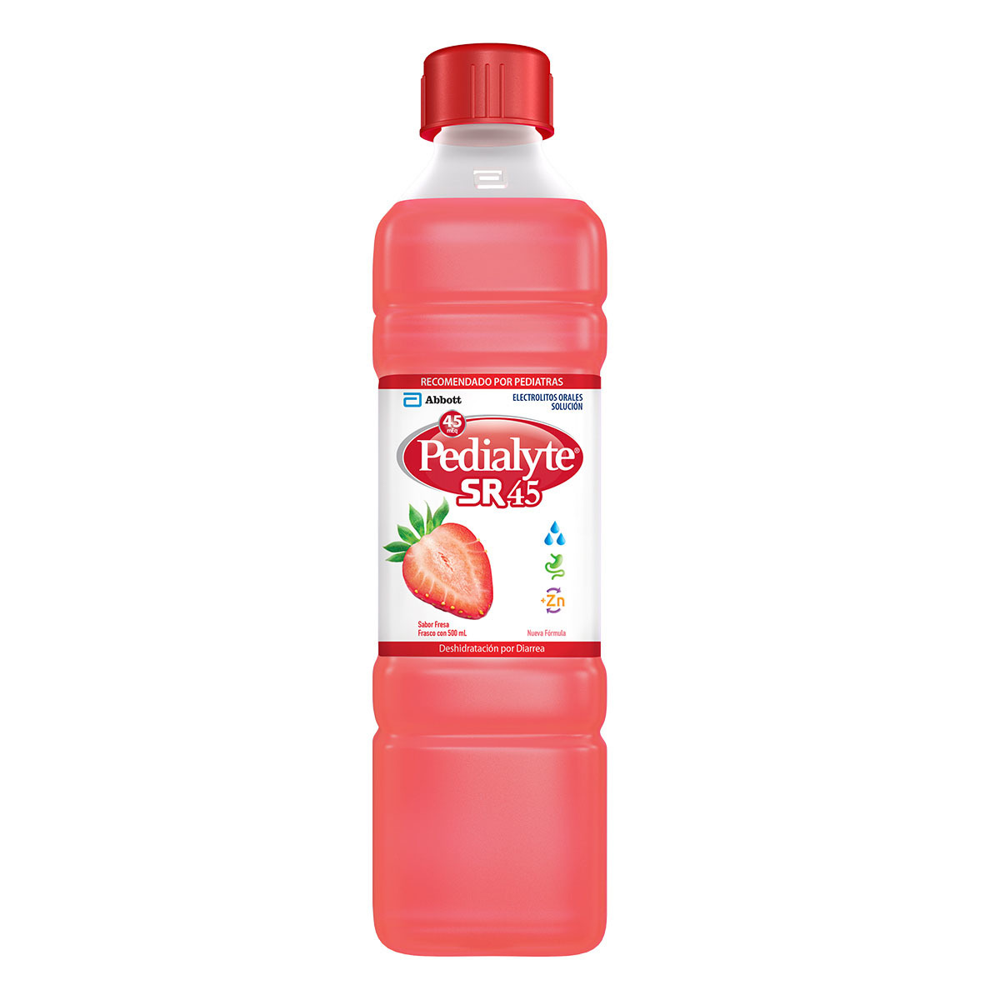

| Nombre del producto | Imagen | Descripción | Precio |
|---|---|---|---|
| Jarabe para la tos |  | Esta conocida marca de antitusivo se especializa en el tratamiento de la tos de tipo mucoso, típica de enfermedades y problemas como los resfriados. | Q30.00 |
| Capsulas | Son pequeños contenedores o envases solubles generalmente fabricados a base de gelatina, en cuyo interior se halla la dosis del fármaco | Q10.00 | |
| Pastillas | Es una porción de pasta consistente, que puede tener diversos tamaños, formas y usos. | Q5.00 | |
| Protector solar |  | Lo ideal es usar un protector solar de amplio espectro, ya que están elaborados con una combinación de elementos de los fotoprotectores físicos y químicos | Q50.00 |
| Desodorante |  | Es una sustancia que se aplica al cuerpo, especialmente en las axilas y los pies, para reducir el olor de la transpiración. | Q15.00 |
| Suero oral |  | Es un suero de rehidratación oral ideal tanto para niños como para adultos, indicado para el tratamiento de la deshidratación por diarrea | Q30.00 |